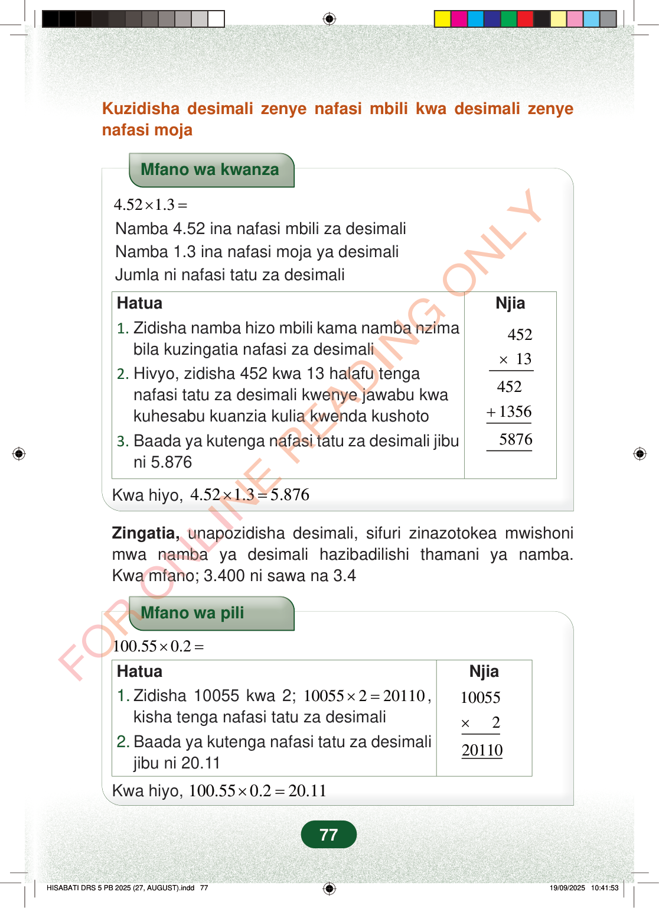

Kuzidisha desimali zenye nafasi mbili kwa desimali zenyenafasi mojaMfano wa kwanza4.521.3×=Namba 4.52 ina nafasi mbili za desimaliNamba 1.3 ina nafasi moja ya desimaliJumla ni nafasi tatu za desimaliNjia×45213+45213565876Hatua1.Zidisha namba hizo mbili kama namba nzimabila kuzingatia nafasi za desimali2.Hivyo, zidisha 452 kwa 13 halafu tenganafasi tatu za desimali kwenye jawabu kwakuhesabu kuanzia kulia kwenda kushoto3.Baada ya kutenga nafasi tatu za desimali jibuni 5.876Kwa hiyo,4.521.35.876×=Zingatia,unapozidisha desimali, sifuri zinazotokea mwishonimwa namba ya desimali hazibadilishi thamani ya namba.Kwa mfano; 3.400 ni sawa na 3.4Mfano wa pili100.550.2×=Njia10055×220110Hatua1.Zidisha 10055 kwa 2;10055220110×=,kisha tenga nafasi tatu za desimali2.Baada ya kutenga nafasi tatu za desimalijibu ni 20.11Kwa hiyo,100.550.220.11×=77
Kuzidisha desimali zenye nafasi mbili kwa desimali zenye nafasi moja
Mfano wa kwanza
4.52 1.3 × = Namba 4.52 ina nafasi mbili za desimali Namba 1.3 ina nafasi moja ya desimali Jumla ni nafasi tatu za desimali
Njia
×
452 13
452 1356
5876
Hatua 1. Zidisha namba hizo mbili kama namba nzima bila kuzingatia nafasi za desimali 2. Hivyo, zidisha 452 kwa 13 halafu tenga nafasi tatu za desimali kwenye jawabu kwa kuhesabu kuanzia kulia kwenda kushoto 3. Baada ya kutenga nafasi tatu za desimali jibu ni 5.876
Kwa hiyo, 4.52 1.3 5.876 × =
Zingatia, unapozidisha desimali, sifuri zinazotokea mwishoni mwa namba ya desimali hazibadilishi thamani ya namba. Kwa mfano; 3.400 ni sawa na 3.4
Mfano wa pili
100.55 0.2 × =
Njia
10055
×
2
20110
Hatua 1. Zidisha 10055 kwa 2; 10055 2 20110 × = , kisha tenga nafasi tatu za desimali 2. Baada ya kutenga nafasi tatu za desimali jibu ni 20.11
Kwa hiyo, 100.55 0.2 20.11 × =
77
Kuzidisha desimali zenye nafasi mbili kwa desimali zenye nafasi mojaMfano wa kwanza wa kuzidisha desimali: 4.52 × 1.3. Hatua zinaonyesha kuzidisha 452 kwa 13 kisha kurudisha nafasi tatu za desimali ili kupata jibu 5.876.Mfano wa kwanza<math><mrow><mn>4.52</mn><mo>×</mo><mn>1.3</mn><mo>=</mo></mrow></math>Namba 4.52 ina nafasi mbili za desimaliNamba 1.3 ina nafasi moja ya desimaliJumla ni nafasi tatu za desimaliHatuaNjia1. Zidisha namba hizo mbili kama namba nzima bila kuzingatia nafasi za desimali2. Hivyo, zidisha 452 kwa 13 halafu tenga nafasi tatu za desimali kwenye jawabu kwa kuhesabu kuanzia kulia kwenda kushoto3. Baada ya kutenga nafasi tatu za desimali jibu ni 5.876452× 13452+ 13565876Kwa hiyo, 4.52 × 1.3 = 5.876Zingatia, unapozidisha desimali, sifuri zinazotokea mwishoni mwa namba ya desimali hazibadilishi thamani ya namba.Kwa mfano; 3.400 ni sawa na 3.4Mfano wa pili wa kuzidisha desimali: 100.55 × 0.2. Hatua zinaonyesha kuzidisha 10055 kwa 2 kisha kurudisha nafasi tatu za desimali ili kupata jibu 20.11.Mfano wa pili<math><mrow><mn>100.55</mn><mo>×</mo><mn>0.2</mn><mo>=</mo></mrow></math>HatuaNjia1. Zidisha 10055 kwa 2; 10055 × 2 = 20110, kisha tenga nafasi tatu za desimali2. Baada ya kutenga nafasi tatu za desimali jibu ni 20.1110055× 220110Kwa hiyo, 100.55 × 0.2 = 20.11